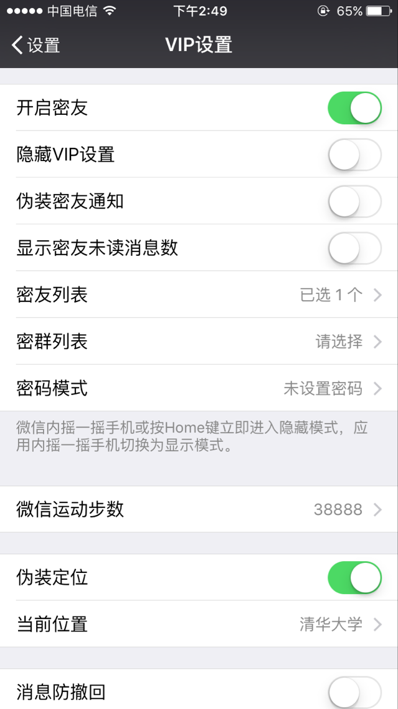

- 
- 更多预览
功能介绍
-
安装插件后进入官方微信【我】【设置】【VIP设置】开启相关功能即可开始使用!
•【微信密友】设置密友后,任意界面按HOME键退出或摇一摇立即进入隐藏模式，隐藏模式下所有密友相关信息、密友设置将隐藏不可见，后台不提醒密友推送消息。
正版密友，功能最完善，隐藏更彻底，紧跟微信更新，已稳定使用两年。
•【运动步数修改】可自由修改运动步数，永远占领好友封面，每天步数只能增加，不能减少，最大98800步，首页搜索【微信运动】可查看排行榜。
•【伪装定位】可自由设置当前位置，附近的人、共享实时位置等所在定位变为伪装地址。
•【消息防撤回】全面拦截消息撤回，并提醒您拦截了一条消息撤回，拦截提示上方的消息即为对方撤回的消息。
•【语音转发】聊天界面支持语音消息转发
•试用满意后付费每个用户都有1天试用时间，您可以试用满意后付费，购买授权码后应用内输入卡号密码授权。
- 支持 iOS 9 ~ 12 | 微信 6.5.5 +
常见问题
- •找不到密友设置、找不到VIP设置了，怎么办？
- 答：请注意区分隐藏模式/显示模式，隐藏模式下密友及相关设置是隐藏不可见的，需切换到显示模式，切换显示/隐藏模式方法：
1.如未设置密友密码，在VIP设置页面摇一摇手机切换；
2.设置密码后进入密码模式，只能通过微信首页聊天列表上面搜索框（如看不到，往下拉一下即可）输入密友密码进入显示模式。
3.请一定记住您的密码， 如忘记密码，只能卸载应用后重新安装。
- •授权码如何购买？还有优惠吗？
- 答：安装插件后进入微信【我】【设置】【VIP设置】【购买授权码】跳转到购买页面，支付完成返回购买页面即可查看授权码， 拿到授权码在VIP设置内点击授权或续费即可！网站上就是最优惠的价格，无其他更优惠渠道！
新功能
-
版本 1.0 更新时间:2018-08-22
1.支持微信版本到7.0+;
2.修复可能引起卡顿、闪退的bug；
- 版本历史记录